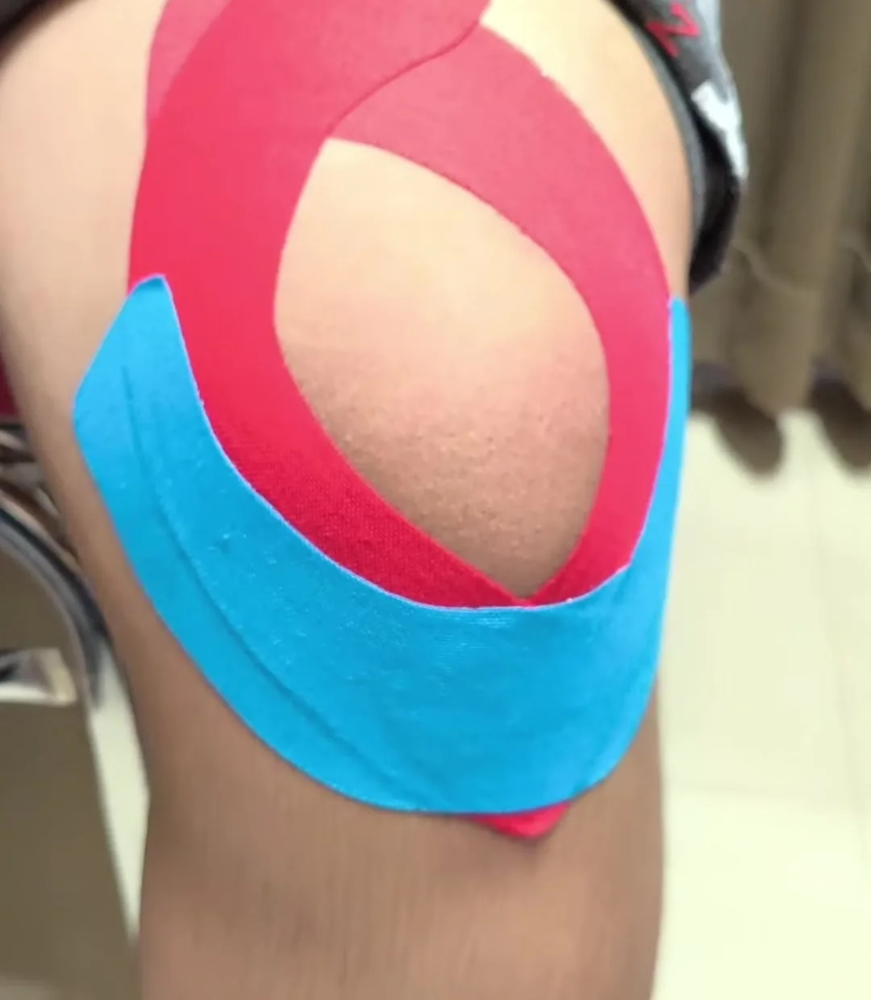
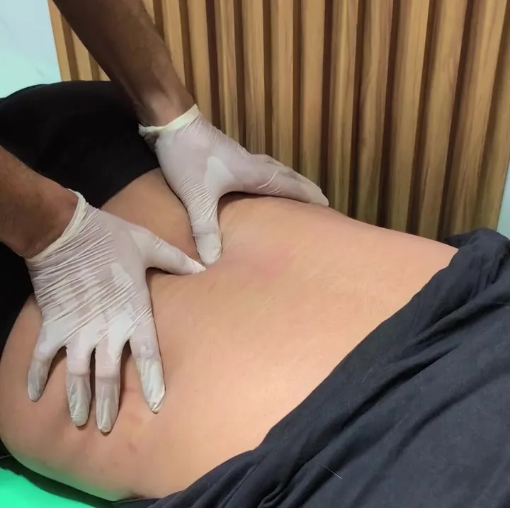
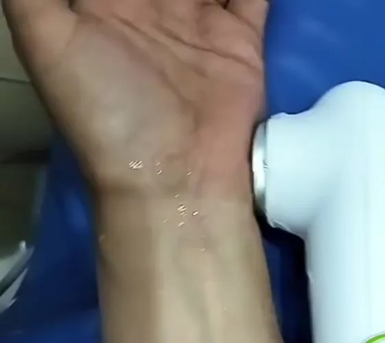
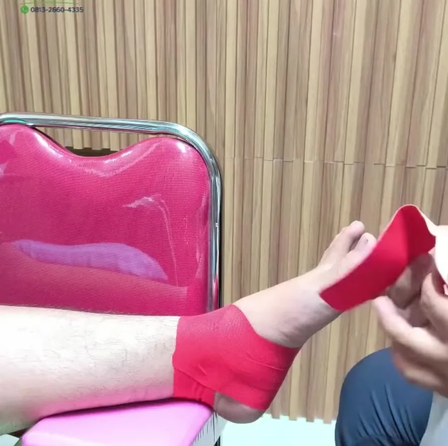
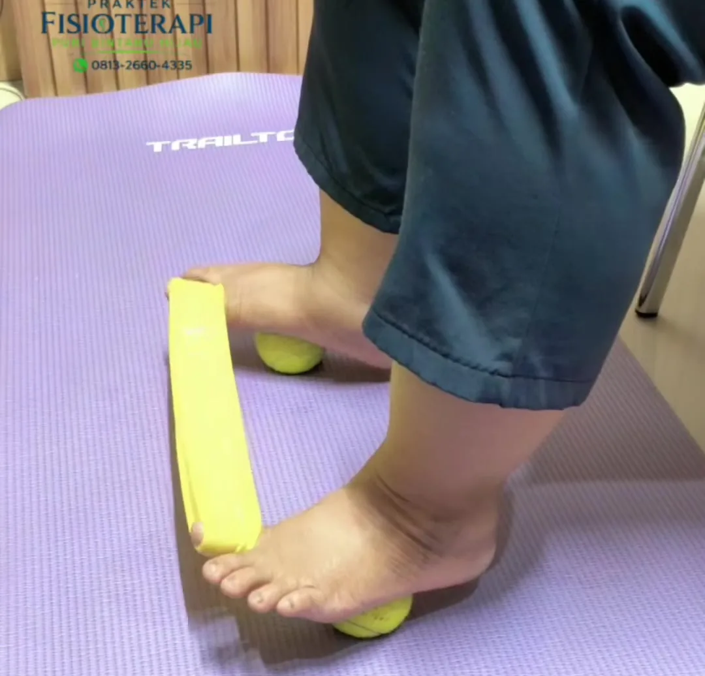
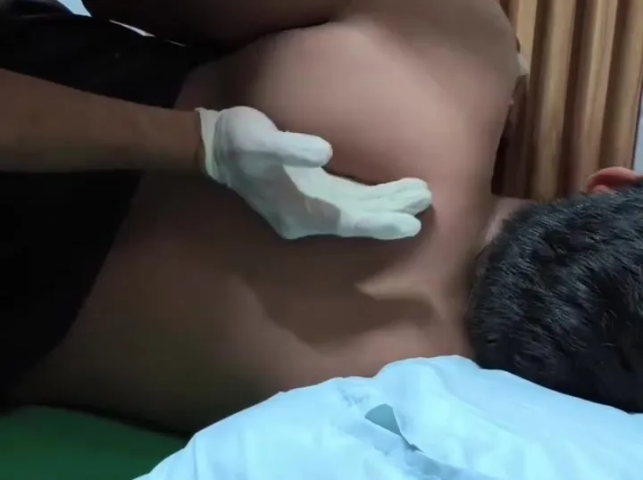
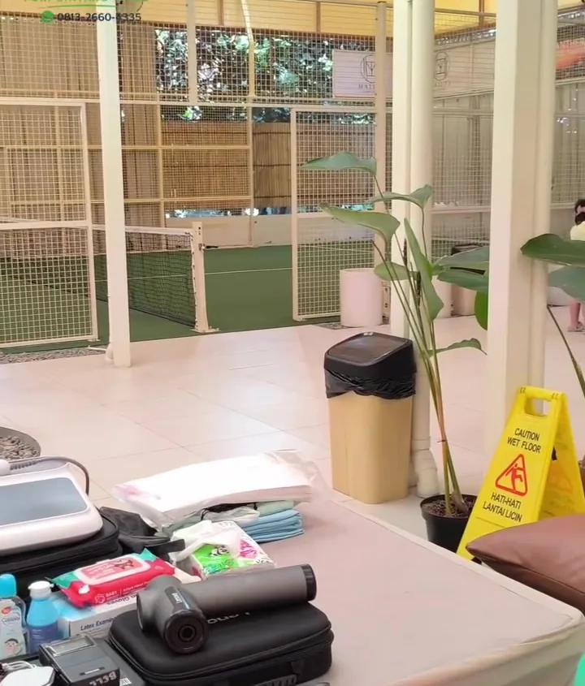

Langkah pertama
Assessment & evaluasi
Pemeriksaan gerak, kekuatan, dan sumber nyeri. Hasilnya dijelaskan, lalu dibuat rencana terapi dan target pemulihan.
Fisioterapi · Bintaro
Fisioterapi untuk nyeri, cedera olahraga, saraf kejepit, sampai rehabilitasi pasca stroke. Diperiksa dulu, lalu diterapi dan dilatih sesuai kondisi kamu. Bisa di klinik atau di rumah.

Keluhan yang ditangani
Dari nyeri harian sampai pemulihan setelah operasi. Kalau keluhanmu belum ada di daftar, tanyakan saja dulu.
Belum yakin keluhanmu cocok? Ceritakan lewat WhatsApp.
Layanan
Setiap sesi dimulai dari pemeriksaan. Dari situ fisioterapis memilih kombinasi alat, teknik tangan, dan latihan yang paling pas.
Pemeriksaan gerak, kekuatan, dan sumber nyeri. Hasilnya dijelaskan, lalu dibuat rencana terapi dan target pemulihan.

Teknik tangan untuk sendi yang kaku dan otot yang tegang, misalnya mobilisasi lumbar untuk nyeri pinggang bawah.

Alat bantu untuk meredakan nyeri, mengurangi peradangan, dan mempercepat pemulihan jaringan.

Melepas titik otot yang tegang dan memicu nyeri. Dipakai antara lain untuk cedera pergelangan tangan akibat olahraga.

Memberi dukungan dan rasa stabil di lutut atau pergelangan kaki, supaya kamu bisa kembali bergerak dengan percaya diri.

Latihan penguatan, keseimbangan, dan kontrol gerak, plus program yang bisa kamu lanjutkan sendiri di rumah.
Alurnya
Ceritakan keluhanmu dan pilih jadwal. Bisa datang ke klinik atau minta homecare.
Fisioterapis mencari sumber keluhan dan menjelaskannya dengan bahasa yang mudah.
Kombinasi alat, teknik manual, dan latihan sesuai hasil pemeriksaan.
Latihan lanjutan dan edukasi supaya hasilnya bertahan dan keluhan tidak mudah kambuh.
Homecare
Untuk pasien yang sulit bepergian, fisioterapis bisa datang ke rumah dengan program yang sama seperti di klinik.


Fisioterapi olahraga
Kami berkolaborasi dengan komunitas TWG Padel Bintaro untuk mendampingi pemain langsung di lapangan: mencegah cedera, menangani keluhan saat bertanding, dan membantu pemulihan.
Cedera ankle, lutut, bahu, atau pergelangan tangan karena olahraga? Kami bantu kamu kembali ke lapangan dengan aman.
Dari ruang terapi
Cuplikan sesi terapi dan latihan yang kami bagikan di media sosial.
Visi kami
“Kepuasan dan progres terbaik pasien adalah kebahagiaan kami.”Bersama kami, menuju hidup yang lebih baik.
Lokasi & jadwal
| Senin – Sabtu | 08.30 – 20.00 |
| Minggu | 14.00 – 20.00 |
Semakin cepat ditangani, biasanya pemulihan juga semakin cepat. Buat janji sekarang, jadwalnya kami bantu atur.
Buat janji via WhatsApp